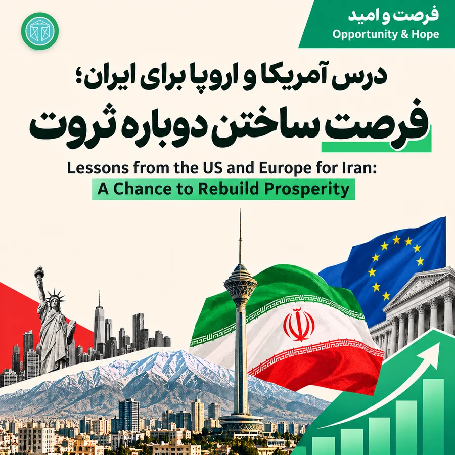
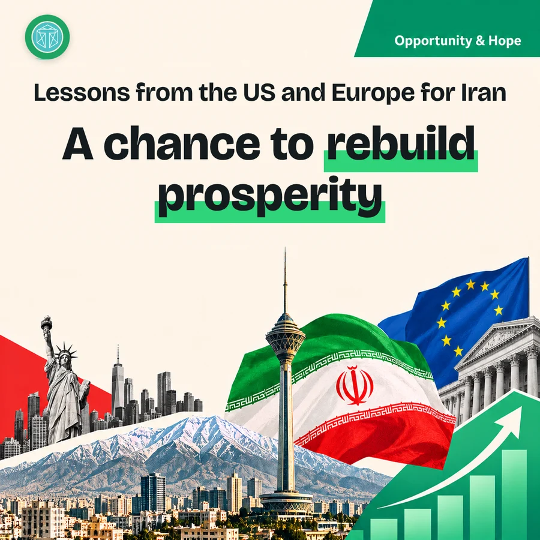

درس آمریکا و اروپا برای ایران؛ فرصت ساختن دوبارهی ثروت
Lessons from the US and Europe for Iran: a chance to rebuild prosperity
آمریکا رشد دارد ولی به همه نمیرسد؛ اروپا منصفانه تقسیم میکند ولی رشد ندارد. ایران میتواند از هر دو درس بگیرد
America grows but doesn’t share; Europe shares but doesn’t grow. Iran can learn from both
شاید فکر کنیم کوچک شدن سفره و قدرت خرید فقط درد کشورهایی مثل ایران است. اما حتی در ثروتمندترین کشورهای جهان هم میلیونها نفر حس میکنند تلاش بیشتر دیگر به زندگی بهتر نمیرسد. فایننشال تایمز در تحلیلی تازه نشان داده که آمریکا و اروپا دو بیماری اقتصادی کاملاً متفاوت دارند. و همین تفاوت، درس روشنی برای ایران دارد: برای بهتر شدن زندگی مردم، هم باید ثروت ساخت و هم باید آن را به زندگی مردم رساند.
در یک نگاه
- در بریتانیا، درآمد واقعی خانوارها در دههی ۲۰۱۰ سالی حدود ۱٪ رشد کرد؛ برای دههی ۲۰۲۰ تا ۲۰۳۰ این رقم به حدود یکدهم درصد در سال رسیده است
- مشکل آمریکا: اقتصاد رشد میکند، ولی سهم بزرگی از آن به بالای جامعه میرسد. مشکل اروپا: منافع منصفانهتر تقسیم میشود، ولی رشدی برای تقسیم نیست
- صندوق بینالمللی پول رشد ۲۰۲۶ را برای آمریکا ۲٫۳٪ و برای منطقهی یورو ۱٫۱٪ پیشبینی میکند؛ هند ۷٪ و چین ۴٫۵٪
- تفاوت ۱٪ و ۵٪ رشد سالانه کوچک به نظر میرسد، ولی در ده سال یعنی ۱۰٪ در برابر ۶۳٪ افزایش قدرت خرید
- ایران از صفر شروع نمیکند: نیروی انسانی، منابع، تجربهی صنعتی و موقعیت جغرافیایی از قبل هستند؛ کار اصلی تبدیل آنها به درآمد و رفاه است
۱. خبر: دو اقتصاد بزرگ، دو مشکل وارونه
جان برنمرداک، تحلیلگر ارشد دادهی فایننشال تایمز، در یادداشتی با عنوان «آمریکا و اروپا مشکلات اقتصادی وارونهای دارند» از یک عدد شروع میکند که همراه بودجهی اکتبر ۲۰۲۶ بریتانیا منتشر شد: دههی ۲۰۱۰ برای جیب خانوارهای بریتانیایی دههی سختی بود و درآمد واقعی آنها سالی فقط حدود ۱٪ رشد کرد؛ کمتر از نصف دهههای قبل. اما دههی ۲۰۲۰ از آن هم بدتر است: میانگین درآمد قابل تصرف خانوار در دههی منتهی به ۲۰۳۰ سالی تنها حدود یکدهم درصد بالا میرود (Financial Times).
خیلیها پاسخ آمادهای دارند: حتماً ثروتمندان سهم بقیه را بردهاند، مثل آمریکا. ولی برنمرداک میگوید ماجرا وارونه است:
| آمریکا | بریتانیا و بخش بزرگی از اروپا | |
|---|---|---|
| رشد اقتصاد | نسبتاً سریع | کند |
| تقسیم منافع | سهم بزرگی به بالای جامعه میرسد | نسبتاً متعادل |
| مشکل اصلی | رشد هست، ولی به همه نمیرسد | تقسیم منصفانه است، ولی رشدی نیست |
پیشبینی رسمی دفتر مسئولیت بودجهی بریتانیا هم همین را تأیید میکند: درآمد واقعی قابل تصرف هر نفر در ۲۰۲۶ و ۲۰۲۷ بهطور میانگین سالی ۰٫۴٪ کم میشود و تا ۲۰۳۰ فقط حدود ۲٪ بالاتر از پیش از کرونا خواهد بود. همزمان بار مالیاتی به رکورد تاریخی میرسد و تا ۲۰۳۲ به ۴۲٫۹٪ تولید ناخالص داخلی بالا میرود (OBR).
۲. رشد اقتصادی کشورها در ۲۰۲۶
| کشور یا منطقه | رشد واقعی پیشبینیشدهی ۲۰۲۶ |
|---|---|
| هند | ۷٪ |
| اندونزی | ۵٫۱٪ |
| چین | ۴٫۵٪ |
| اقتصاد جهان | ۳٫۱٪ |
| آمریکا | ۲٫۳٪ |
| اتحادیهی اروپا | ۱٫۴٪ |
| بریتانیا | ۱٫۳٪ |
| منطقهی یورو | ۱٫۱٪ |
| ایران | منفی ۷٫۶٪ |
منبع: صندوق بینالمللی پول، چشمانداز اقتصاد جهان، اکتبر ۲۰۲۶. این ارقام پیشبینیاند، نه نتیجهی قطعی سال.
صندوق بینالمللی پول میگوید چشمانداز جهان «دوپاره» شده است: سرمایهگذاری در هوش مصنوعی اقتصادهای پیشرفته را بالا نگه داشته، در حالی که جنگ و گرانی انرژی کشورهای واردکنندهی انرژی را زیر فشار گذاشته است (Al-Monitor).
برای ایران، رقم امسال حاصل یک شوک جنگی است، نه یک سرنوشت. در پیشبینی آوریل، صندوق برای ۲۰۲۷ رشد ۳٫۲ درصدی ایران را در نظر گرفته بود، به شرط عادی شدن تولید انرژی و حملونقل. برای کشورهای حاشیهی خلیج فارس هم در ۲۰۲۷ جهش ۹٫۱ درصدی پیشبینی شده، به شرط پایان درگیریها و بازگشت کشتیرانی در تنگهی هرمز (The National). اقتصادها بعد از شوکها برمیگردند؛ سؤال این است که با چه آمادگیای.
۳. چرا آمریکا جلو افتاد و اروپا جا ماند؟
- فناوری و هوش مصنوعی: گزارش سپتامبر ۲۰۲۶ OECD سرمایهگذاری در هوش مصنوعی و فناوری را از دلایل مهم فاصلهی رشد آمریکا و اروپا میداند (OECD)
- سرمایه و بازار مالی: شرکتهای تازه در آمریکا راحتتر سرمایه میگیرند و بزرگ میشوند. گزارش معروف ماریو دراگی در ۲۰۲۴ گفت اروپا برای جبران عقبماندگی، سالی حدود ۷۵۰ تا ۸۰۰ میلیارد یورو سرمایهگذاری اضافی لازم دارد
- انرژی: هزینهی انرژی در اروپا بالاتر است و صنعت را زیر فشار میگذارد
- بهرهوری: در درازمدت، تنها راه پایدار بالا بردن دستمزد، تولید بیشتر با همان ساعت کار است
درس این بخش ساده است: رشد خودبهخود نمیآید؛ از سرمایهگذاری، فناوری، انرژی ارزان و بهرهوری ساخته میشود.
۴. درس اول: رشد لازم است، و اثرش مرکب است
| رشد واقعی سالانهی قدرت خرید | پس از ۱۰ سال | پس از ۲۵ سال |
|---|---|---|
| ۱٪ | حدود ۱۰٪ بیشتر | حدود ۲۸٪ بیشتر |
| ۳٪ | حدود ۳۴٪ بیشتر | حدود ۱۰۹٪ بیشتر |
| ۵٪ | حدود ۶۳٪ بیشتر | حدود ۲۳۹٪ بیشتر |
این یک محاسبهی آموزشی با فرض رشد مرکب است، نه پیشبینی اقتصاد ایران.
یعنی فرق ۱٪ و ۵٪، در یک نسل، فرق زندگیای است که کمی بهتر میشود با زندگیای که بیش از سه برابر میشود. کشوری که میخواهد نسل بعدش از نسل قبل ثروتمندتر باشد، بدون رشد به آنجا نمیرسد.
۵. درس دوم: رشد باید به زندگی مردم برسد
پیشرفت اقتصادی وقتی معنا دارد که یک جوان پس از چند سال کار بتواند مستقل شود، خانه اجاره کند یا بخرد، خانواده تشکیل دهد، پسانداز کند و برای آینده برنامه داشته باشد. تجربهی آمریکا نشان میدهد رشد بالا اگر به مزد، مسکن و فرصت برای همه نرسد، حس عقب ماندن را از بین نمیبرد.
رشدی که به زندگی مردم میرسد معمولاً از اینها میگذرد: شغلهای بیشتر و بهتر، کسبوکارهای کوچک زیاد، آموزش مهارت، مسکن در دسترس و تورم پایین.
۶. ایران چه دارد؟
با همهی سختیها، ایران داراییهایی دارد که توسعهی خیلی از کشورها به آنها وابسته است:
- نیروی انسانی تحصیلکرده و متخصص
- ذخایر بزرگ انرژی و مواد معدنی؛ همانطور که در گزارش جهان به کدام کشورها وابسته است دیدیم
- زیرساخت و تجربهی تولید صنعتی
- بازار داخلی بزرگ
- موقعیت جغرافیایی برای تجارت منطقهای و ترانزیت؛ موضوع گزارش مسیرهای ریلی چین تا ایران
- جامعهی ایرانیان متخصص و کارآفرین در سراسر جهان
بانک جهانی هم در معرفی اقتصاد ایران به بازار داخلی بزرگ، نیروی انسانی تحصیلکرده و تنوع نسبی فعالیتهای اقتصادی اشاره میکند (World Bank). اما داشتن منابع با تبدیل آنها به درآمد و رفاه یکی نیست. امید ایران در استفادهی بهتر از همین ظرفیتهای موجود است.
۷. هفت مسیر برای ساختن دوبارهی ثروت
🏭 ۱. از فروش منابع به ساختن محصول
هرچه سهم بیشتری از زنجیرهی تولید در ایران شکل بگیرد، شغل متخصص و درآمد بیشتری ساخته میشود: محصولات صنعتی، تجهیزات مهندسی، دارو، مواد فرآوریشده و صنایع پیشرفته.
💻 ۲. صادرات خدمات و دانش
صادرات فقط کشتی و کامیون نیست. برنامهنویسی، طراحی، معماری، خدمات مهندسی و آموزش هم درآمد ارزی میسازند؛ به شرط اینترنت پایدار و راه قانونی دریافت درآمد. گزارش درآمد ارزی از ایران را ببینید.
🤖 ۳. بهرهوری با فناوری و هوش مصنوعی
شرکتهای کوچک و متوسط با اتوماسیون، نرمافزار و هوش مصنوعی میتوانند هزینه را کم و کیفیت را بالا ببرند. بهرهوری یعنی با همان زمان، انرژی و منابع، بیشتر و بهتر تولید کنیم.
🌍 ۴. ایرانیان جهان، شبکهای برای توسعه
میلیونها ایرانی در جهان در علم، صنعت، فناوری و تجارت کار میکنند؛ از دانشمندان تا کارآفرینانی مثل همبنیانگذار دراپباکس. همکاری، انتقال تجربه و سرمایه، اگر قانونی و قابل پیشبینی باشد، این ظرفیت را به فرصت تبدیل میکند.
🤝 ۵. تجارت با همسایهها
کشورهای منطقه بازار طبیعی محصولات صنعتی، غذایی، پزشکی و خدمات مهندسی ایراناند. اقتصادی که به یک بازار یا یک محصول وابسته نباشد، پایدارتر است.
🏪 ۶. میدان دادن به کسبوکارهای کوچک
رشد فقط از پروژههای بزرگ نمیآید. هزاران کارگاه، فروشگاه، تیم نرمافزاری و کسبوکار خانوادگی با هم اشتغال بزرگی میسازند؛ اگر به سرمایه دسترسی داشته باشند و قوانین قابل پیشبینی باشد.
🕊 ۷. همکاری اقتصادی، زمینهی کم شدن تنش
وقتی کشورها در تولید، تجارت، انرژی و حملونقل منافع مشترک دارند، انگیزهی بیشتری برای ثبات دارند. ایرانِ تولیدکننده و دارای روابط اقتصادی متنوع، شریک ارزشمندتری برای منطقه و جهان است. رشد اقتصادی همهی اختلافها را حل نمیکند، اما انگیزههای تازهای برای همکاری میسازد.
۸. آینده هنوز نوشته نشده است
شرایط امروز اقتصاد ایران سخت است و نمیشود تورم، محدودیتهای تجاری، کمبود سرمایهگذاری و ناترازی انرژی را نادیده گرفت. ولی سخت بودن امروز به معنای ناممکن بودن فردا نیست.
ایران از صفر شروع نمیکند. دانش، تجربهی صنعتی، نیروی انسانی، منابع طبیعی و روحیهی کارآفرینی از قبل هستند. تجربهی آمریکا و اروپا هم یادآوری میکند که حتی ثروتمندترین اقتصادها برای حفظ رفاه مردمشان باید مدام خود را اصلاح کنند؛ هیچ کشوری برای همیشه برنده یا بازنده نیست.
تحلیل دیتومان
آمریکا به ما یاد میدهد که رشد بدون تقسیم، حس عقب ماندن را از بین نمیبرد. اروپا یاد میدهد که تقسیم منصفانه بدون رشد، سفره را بزرگ نمیکند. ایران میتواند از هر دو درس بگیرد: هم کیک را بزرگ کند، هم مطمئن شود سهم بیشتری از آن به سفرهی مردم میرسد.
معیار موفقیت نه فقط بزرگتر شدن تولید ناخالص داخلی، بلکه بهتر شدن زندگی واقعی مردم است: جوانی که شغل پیدا میکند، خانوادهای که پسانداز میکند، و کسبوکاری که بزرگ میشود. این مسیر طولانی است، ولی شروعش در دست ماست.
بیشتر بخوانید
منابع
- Financial Times: The US and Europe have opposite economic problems (John Burn-Murdoch)
- Office for Budget Responsibility: Economic and fiscal outlook, October 2026
- IMF DataMapper: Real GDP growth, World Economic Outlook October 2026
- Al-Monitor: IMF upgrades 2026 growth forecast but warns of split outlook
- Amwal Al Ghad: IMF sees Iran’s economy contracting in 2026 (April WEO)
- The National: IMF forecasts Gulf contraction in 2026 and rebound in 2027
- OECD Economic Outlook, Interim Report, September 2026
- World Bank: Iran overview
آخرین بازبینی: ۷ آذر ۱۴۰۵. عدد یکدهم درصد از تحلیل فایننشال تایمز نقل شده و با پیشبینی دفتر مسئولیت بودجهی بریتانیا سازگار است. رقمهای رشد ۲۰۲۶ پیشبینی صندوق بینالمللی پولاند، نه نتیجهی قطعی. هفت مسیر پیشنهادی، تحلیل دیتومان است، نه پیشنهاد فایننشال تایمز یا بانک جهانی.